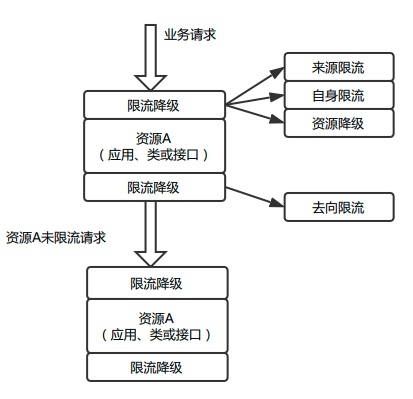
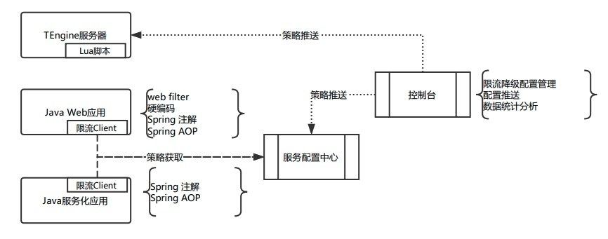
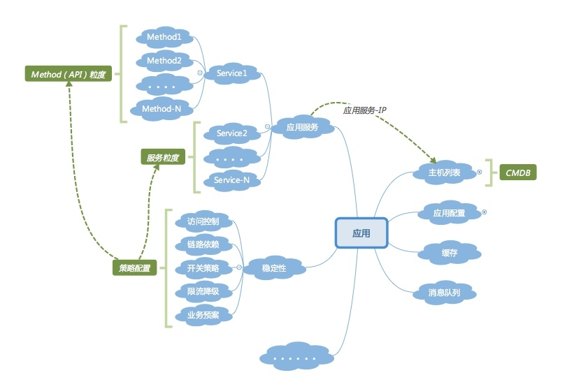

- 00 开篇词 带给你不一样的运维思考.md
- 01 为什么Netflix没有运维岗位？.md
- 02 微服务架构时代，运维体系建设为什么要以应用为核心？.md
- 03 标准化体系建设（上）：如何建立应用标准化体系和模型？.md
- 04 标准化体系建设（下）：如何建立基础架构标准化及服务化体系？.md
- 05 如何从生命周期的视角看待应用运维体系建设？.md
- 06 聊聊CMDB的前世今生.md
- 07 有了CMDB，为什么还需要应用配置管理？.md
- 08 如何在CMDB中落地应用的概念？.md
- 09 如何打造运维组织架构？.md
- 10 谷歌SRE运维模式解读.md
- 11 从谷歌CRE谈起，运维如何培养服务意识？.md
- 12 持续交付知易行难，想做成这事你要理解这几个关键点.md
- 13 持续交付的第一关键点：配置管理.md
- 14 如何做好持续交付中的多环境配置管理？.md
- 15 开发和测试争抢环境？是时候进行多环境建设了.md
- 16 线上环境建设，要扛得住真刀真枪的考验.md
- 17 人多力量大vs.两个披萨原则，聊聊持续交付中的流水线模式.md
- 18 持续交付流水线软件构建难吗？有哪些关键问题？.md
- 19 持续交付中流水线构建完成后就大功告成了吗？别忘了质量保障.md
- 20 做持续交付概念重要还是场景重要？看笨办法如何找到最佳方案.md
- 21 极端业务场景下，我们应该如何做好稳定性保障？.md
- 22 稳定性实践：容量规划之业务场景分析.md
- 23 稳定性实践：容量规划之压测系统建设.md
- 24 稳定性实践：限流降级.md
- 25 稳定性实践：开关和预案.md
- 26 稳定性实践：全链路跟踪系统，技术运营能力的体现.md
- 27 故障管理：谈谈我对故障的理解.md
- 28 故障管理：故障定级和定责.md
- 29 故障管理：鼓励做事，而不是处罚错误.md
- 30 故障管理：故障应急和故障复盘.md
- 31 唇亡齿寒，运维与安全.md
- 32 为什么蘑菇街会选择上云？是被动选择还是主动出击？.md
- 33 为什么混合云是未来云计算的主流形态？.md
- 35 以绝对优势立足：从CDN和云存储来聊聊云生态的崛起.md
- 36 量体裁衣方得最优解：聊聊页面静态化架构和二级CDN建设.md
- 37 云计算时代，我们所说的弹性伸缩，弹的到底是什么？.md
- 38 我是如何走上运维岗位的？.md
- 39 云计算和AI时代，运维应该如何做好转型？.md
- 40 运维需要懂产品和运营吗？.md
- 41 冷静下来想想，员工离职这事真能防得住吗？.md
- 42 树立个人品牌意识：从背景调查谈谈职业口碑的重要性.md
- 划重点：赵成的运维体系管理课精华（一）.md
- 划重点：赵成的运维体系管理课精华（三）.md
- 划重点：赵成的运维体系管理课精华（二）.md
- 新书 《进化：运维技术变革与实践探索》.md
- 特别放送 我的2019：收获，静静等待.md
- 结束语 学习的过程，多些耐心和脚踏实地.md
24 稳定性实践：限流降级
本周我们继续来讨论稳定性实践的内容。在现实情况下，当面对极端的业务场景时，瞬时的业务流量会带来大大超出系统真实容量的压力。
为了应对，前面我们介绍了容量规划方面的实践经验。不过，我们不会无限度地通过扩容资源来提升容量，因为无论从技术角度，还是从成本投入角度，这样做都是不划算的，也是不现实的。
所以，我们通常采取的策略就是限流降级，以保障承诺容量下的系统稳定；同时还有业务层面的开关预案执行，峰值时刻只保障核心业务功能，非核心业务功能就关闭。
今天我们就先来介绍一下限流降级的解决方案。
什么是限流和降级
首先，我们先梳理清楚限流和降级的概念，明白它们会发挥怎样的作用，这样才便于我们理解后续的解决方案。
- 限流，它的作用是根据某个应用或基础部件的某些核心指标，如QPS或并发线程数，来决定是否将后续的请求进行拦截。比如我们设定1秒QPS阈值为200，如果某一秒的QPS为210，那超出的10个请求就会被拦截掉，直接返回约定的错误码或提示页面。
- 降级，它的作用是通过判断某个应用或组件的服务状态是否正常，来决定是否继续提供服务。以RT举例，我们根据经验，一个应用的RT在50ms以内，可以正常提供服务，一旦超过50ms，可能就会导致周边依赖的报错或超时。所以，这时我们就要设定一个策略，如果应用的RT在某段时间内超过50ms的调用次数多于N次，那该应用或该应用的某个实例就必须降级，不再对外提供服务，可以在静默一定时间后（比如5s或10s）重新开启服务。
这里再特别说一下降级，今天我们讲的内容可以理解为服务降级，后面我会介绍业务开关，可以理解为业务降级。这里只是叫法不同，不同的人有不同的理解，所以我们在讨论概念时，还是尽量回到我们要解决的问题和场景上来，上下文保持一致了，在观点和思路上也更容易达成一致。
讲到这里，再提个问题，我们讲的降级，和熔断这个概念是什么关系？你不妨停下来，按照我们刚刚讲过的思路思考一下。
常见的限流解决方案
我们先看几种常见的限流类型。
第一类，接入层限流。
作为业务流量的入口，我们限流的第一道关卡往往会设置在这里，而且接入层限流往往也是最有效的。这里又有两类解决方案，根据接入层所使用的技术方案而定。
1.Nginx限流
Nginx或其开源产品是最常用的Web服务器，我们使用的是TEngine。对于一个Web类应用，如Web页面或H5页面，我们通常会将限流策略增加到这一层，会设置QPS、并发数以及CPU的Idle作为限流指标。Nginx有对应的函数接口，可以获取到以上指标信息，然后通过Lua脚本实现限流的逻辑，并作为TEngine的插件安装即可。
2.API路由网关模式
对于客户端模式的接入，我们使用了API路由网关模式，一方面可以更方面地管理客户端与服务端的链接，另一方面也可以通过配置的方式管理服务接口，这里的服务管理会复用到微服务架构的配置中心，并实现相应的路由策略。对于QPS和并发限流，直接在配置中心中进行配置即可。
第二类，应用限流。
这一类的限流策略跟上面API路由网关模式的限流相似，同样是依赖配置中心管理，限流逻辑会配套服务化的框架完成。
第三类，基础服务限流。
主要针对数据库、缓存以及消息等基础服务组件的限流而设定。同样，限流逻辑会配套分布式数据库中间件，缓存或消息的框架来实现。
讲到这里，我来解释几个关键的技术点。
- 资源和策略。资源是我们要进行限流的对象，可能是一个应用，或者一个方法，也可能是一个接口或者URL，体现了不同的限流粒度和类型。策略就是限流的规则，比如下面我们要提到的QPS和并发数限流。
- 时间精度。主要指对于QPS、并发数或CPU的阈值判断。比如对于QPS，我们就会设定一个QPS时间精度（假设3s），如果低于阈值则不启用策略，如果超过阈值就启动限流策略。
- 指标计数。对于并发限制请求，会统计当前的并发数，1次请求进入到限流模块加1，等请求结束退出时减1，当前正在处理的请求数就是并发数。对于QPS限流，统计QPS不能按照秒统计，因为第1s，系统可能就被打挂了，所以QPS得按照毫秒级别去统计，统计的级别越小，性能损耗越大。所以定在10ms~100ms的级别去统计会更平滑一些，比如将1s切成10份，每一份100ms，一个请求进来肯定会落在某一份上，这一份的计数值加1。计算当前的QPS，只需要将当前时间所在份的计数和前面9份的计数相加，内存里面需要维护当前秒和前面2秒的数据。
- 限流方式。对于Nginx就针对总的请求进行限流即可，但是粒度会比较粗。对于应用层，因为配置中心的灵活性，其限流就可以做得更细化。比如可以针对不同来源限流，也可以针对去向限流，粒度上可以针对类级别限流，也可以针对不同的方法限流，同时还可以针对总的请求情况限流，这些灵活策略都可以在微服务的配置中心实现。

- Spring AOP。对于Java应用，绝大多数公司都会用到Spring框架，包括我们上面讲到的分布式数据库等组件，也一样会依赖Spring框架，比如我们用到的MyBatis开源组件。而Spirng框架中的关键技术点，就是IoC和AOP，我们在限流方案的实现上，也会利用到相关技术。简单来说就是，我们通过配置需要限流的方法作为AOP的切入点，设定Advice拦截器，在请求调用某个方法，或请求结束退出某个方法时，进行上述的各种计数处理，同时决定是否要进行限流，如果限流就返回约定好的返回码，如果不限流就正常执行业务逻辑。基于AOP这样一个统一的技术原理，我们就可以开发出与业务逻辑无关的限流组件，通常会在对外的服务调用、数据库调用、缓存调用、消息调用这些接口方法上设置默认的切面，并在业务代码运行时注入，这样就可以做到对业务透明，无侵入性。
- Web类型的限流。对于Web类型URL接口限流，我们就利用Servlet的Filter机制进行控制即可。
- 控制台。上面我们讲了各种配置和策略，如果都是通过人工来操作是不现实的，这时就需要开发对应的限流降级的控制台，将上述的各种配置和策略通过界面的方式进行管理，同时在配置完成之后，能够同步到对应的服务实例上。比如对于Nginx，当一个策略配置完成后，就要同步到指定的服务器上生成新的配置文件并Reload。对于配置中心模式的策略，也就是Spring AOP模式的限流，在控制台上配置完成后，就要将配置值同步更新到配置中心里，同时再通过运行时的依赖注入，在线上运行的业务代码中生效。
整体简化的示意图如下：

限流降级的难点
上面整体介绍了限流降级的解决方案，我们可以看到涉及到很多新概念，各种不同的限流类型，同时还有比较复杂的技术细节，所以要清晰地理解这些概念。
对于降级，主要是针对RT来进行判断，它的整个技术方案没有限流这么复杂，且思路上跟限流是相似的，所以我们就不再单独介绍降级的技术方案了。
从整个建设过程来看，我的体会是，限流降级的难点和关键还是在于整体技术栈的统一，以及后期对每个应用限流降级资源策略的准确把握和配置。
我们先来看整体技术栈的统一，这其实也就是我们在专栏最开始就讲到的标准化建设。这里我们会基于一个统一的技术栈进行限流降级方案的设计，要求有统一的Web服务器类型。对服务化框架、各类分布式框架以及代码开发框架（如Spring），这些都要有很明确的要求。如果这里面有某些应用使用的框架不同，那么这套统一的方案就无法推广落地。
我们在实际推广过程中就遇到很多类似的问题，导致大量的时间耗费在技术栈统一上，甚至会要求业务代码做出改变和调整，代码上线运行后再进行统一，这个代价是非常大的。
这也是为什么我们在一开始就非常强调标准化的重要性。这里我们再强调一下标准化，再来复习一下以应用为核心的运维体系的思维导图。

再来看对应用的限流降级资源策略的把握，这个就需要对应用和业务有深入的了解。比如开发人员要非常清楚哪些接口是核心接口，它的来源和去向有哪些；哪些来源是核心的，哪些是非核心的；如果要限流，需要对哪些接口限流，同时要重点保障哪些接口等等。
对于限流和降级的具体策略，就是QPS和并发数的配置，也要来源于线上实际运行维护的经验，才能知道配置多少是合适的，配置太大没有限流效果，太小又会频繁触发限流，影响正常业务运行。
所以，限流和降级也是一个动态调测和完善的过程，对于有些动态变化的资源是做不到一劳永逸的。
怎么办呢？一方面我们要依赖人的经验；另一方面，从最终的解决方案看，当调用次数和日志达到一定体量时，我们希望能够借助机器学习算法的手段，来帮助我们分析什么样的设置是最合理的。
今天我们讨论了限流和降级的概念、解决方案以及难点，欢迎留言与我讨论。
如果今天的内容对你有帮助，也欢迎你分享给身边的朋友，我们下期见！
© 2019 - 2023 Liangliang Lee. Powered by gin and hexo-theme-book.